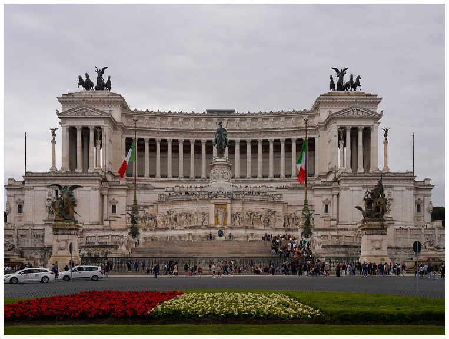
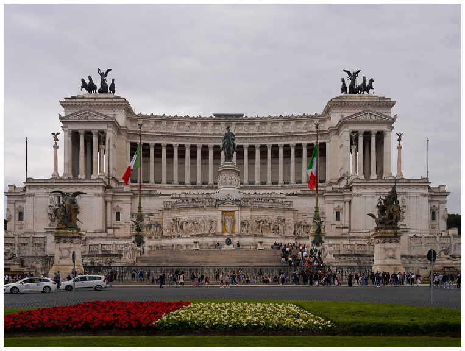
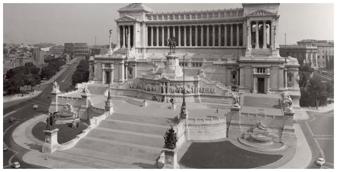
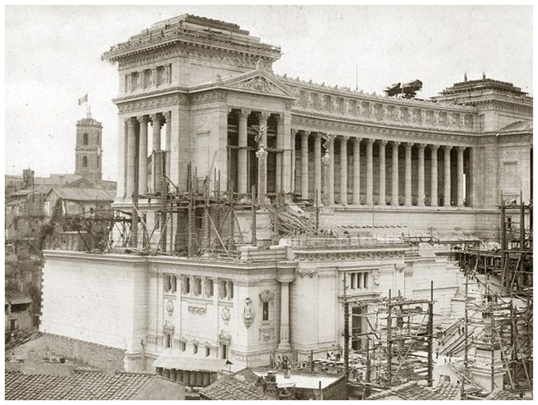

HOW IT WAS BUILT
The Construction of the Altar of the Fatherland began in 1885 and was the vision of architect Giuseppe Sacconi.
Its structure relied heavily on Botticino marble, chosen for its bright, almost luminous appearance.
At the center is the enormous equestrian statue of Victor Emmanuel II, which required an intricate steel framework.
In 1921, the structure gained a new sacred function with the installation of the Tomb of the Unknown Soldier, placed beneath the statue of the goddess Roma.


 Click to see more info
Click to see more info